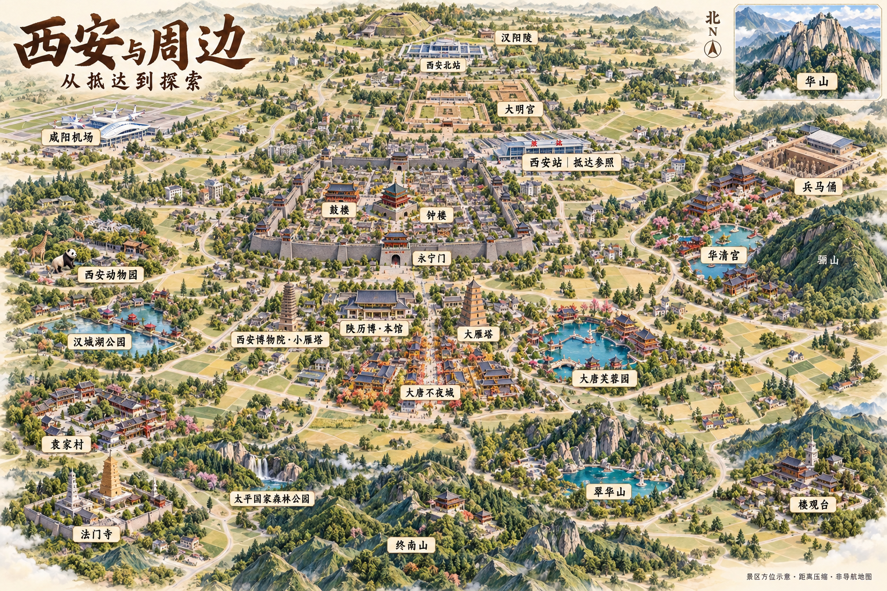

楼阁、古塔与遗址
从钟鼓楼、大雁塔到大明宫与兵马俑，认识不同的历史景观。
阶段备份 · 技能沉淀暂缓。原图作为效果参考，当前内容保留为历史样稿与实验。查看原图与方向备忘 ↗
XI’AN & SURROUNDINGS
从古城楼阁到秦岭山林，从园林宫苑到关中村落。
用一张微缩景观插画，发现想去的地方。

从钟鼓楼、大雁塔到大明宫与兵马俑，认识不同的历史景观。
山岳、森林与园林水景共同构成城市周边的探索主题。
袁家村等目的地补充古建之外的民俗体验。当前样图仍需补齐朱雀、白鹿原相关景区。
以下地点已有资料档案，不代表图中全部景区已核验。